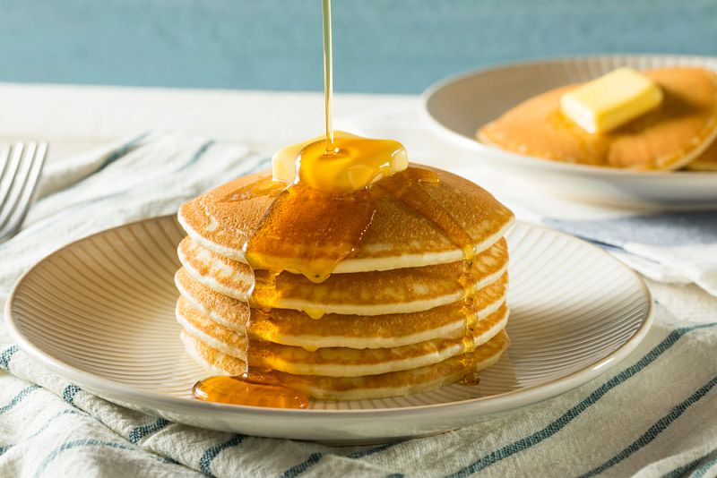

Американские блины
20 минут
2 порции
Легко
Ингредиенты
- Мука — 200 г
- Молоко — 250 мл
- Яйца — 2 шт
- Сахар — 2 ст.л.
- Разрыхлитель — 2 ч.л.
- Соль — щепотка
- Сливочное масло — 50 г
- Кленовый сироп — для подачи
- Свежие ягоды — по желанию
Приготовление
Шаг 1
В миске смешайте муку, сахар, разрыхлитель и соль.
Шаг 2
В другой миске взбейте яйца с молоком и растопленным сливочным маслом.
Шаг 3
Соедините сухие и жидкие ингредиенты, аккуратно перемешайте до однородности.
Шаг 4
Разогрейте сковороду, выпекайте блины по 2-3 минуты с каждой стороны до золотистой корочки.
Шаг 5
Подавайте с кленовым сиропом и свежими ягодами.